Egocêntrico
As imagens são captadas do ponto de vista de quem caminha, com o celular junto ao corpo — como se a câmera “visse” o caminho junto com a pessoa.
Dados egocêntricos de vídeo e sensores para pesquisas em navegação assistiva em ambientes internos.
O SenseCV é um dataset egocêntrico visual-inercial: vídeos gravados por um smartphone junto ao corpo de quem caminha, sincronizados com dados de acelerômetro, giroscópio e outros sensores do aparelho.
As gravações foram feitas em diferentes ambientes internos e permitem investigar duas perguntas: o caminho à frente está livre ou bloqueado? e, se houver desvio, para qual lado?
Como os ambientes são separados entre treino e teste, a base também permite avaliar se os modelos funcionam em lugares que nunca viram.
Conhecer o projeto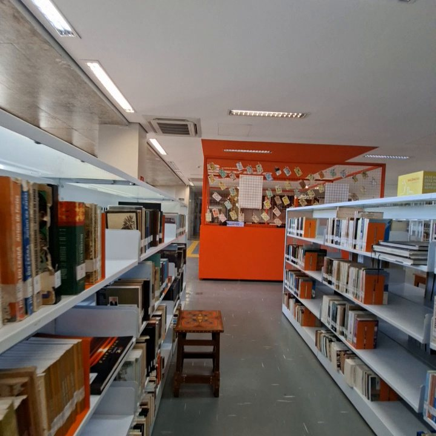
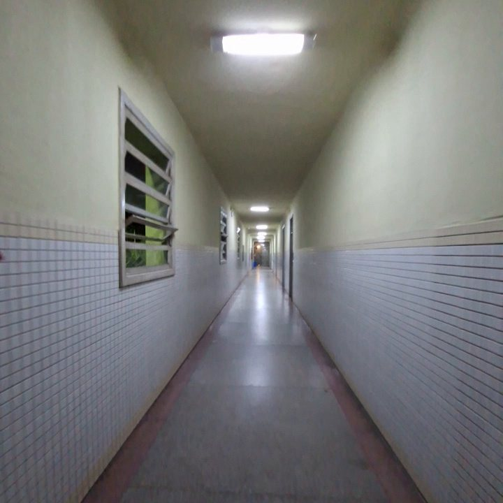
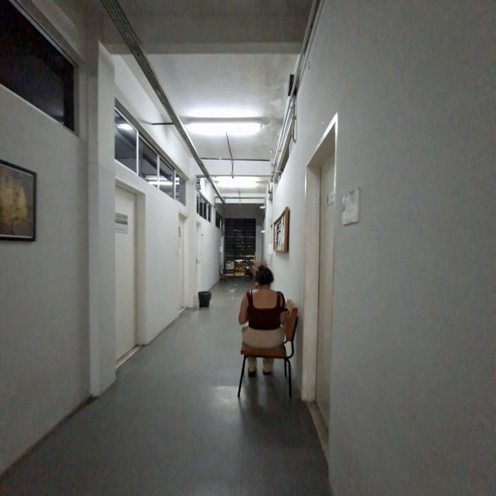
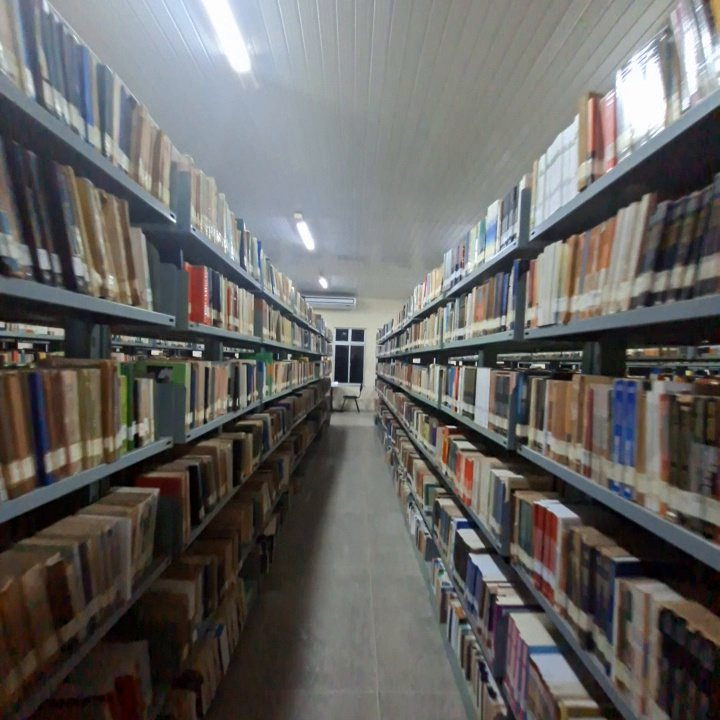
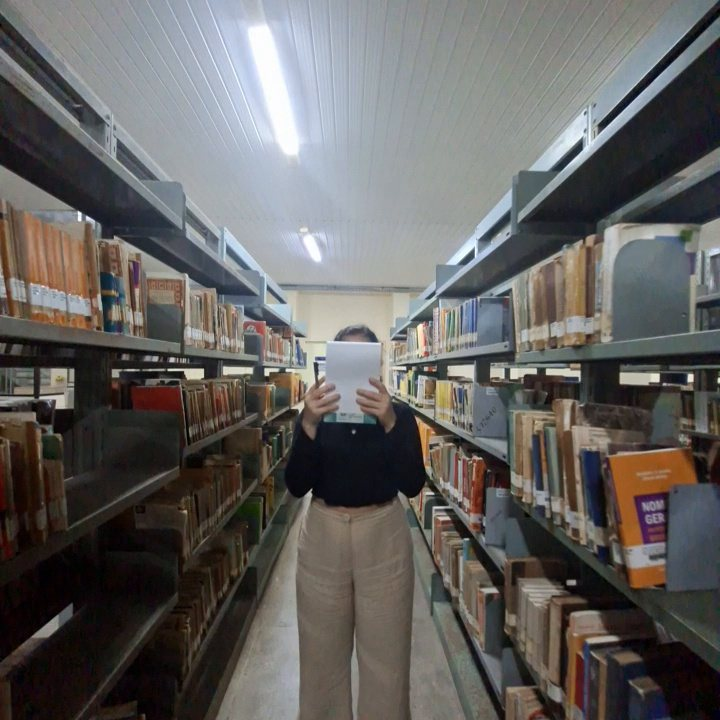
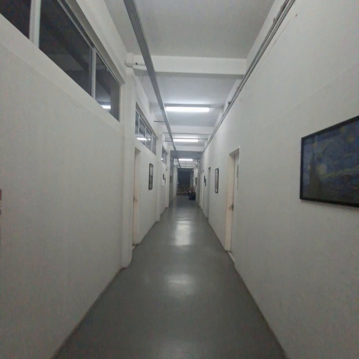
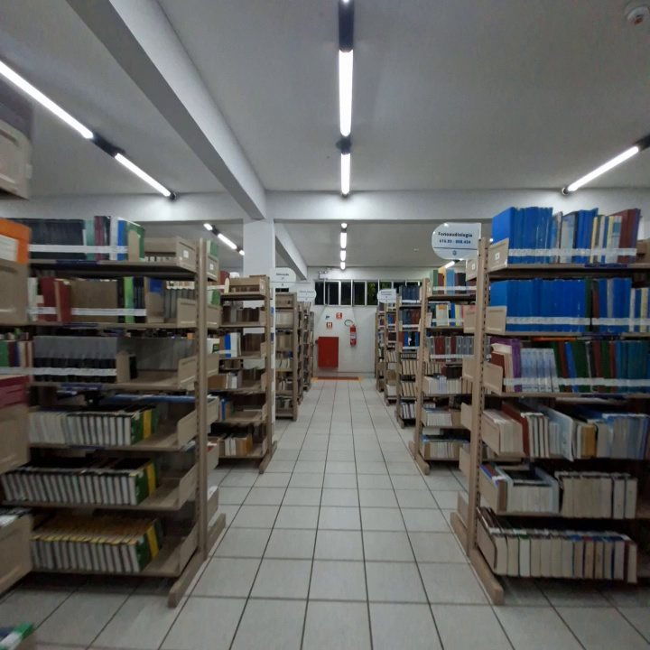
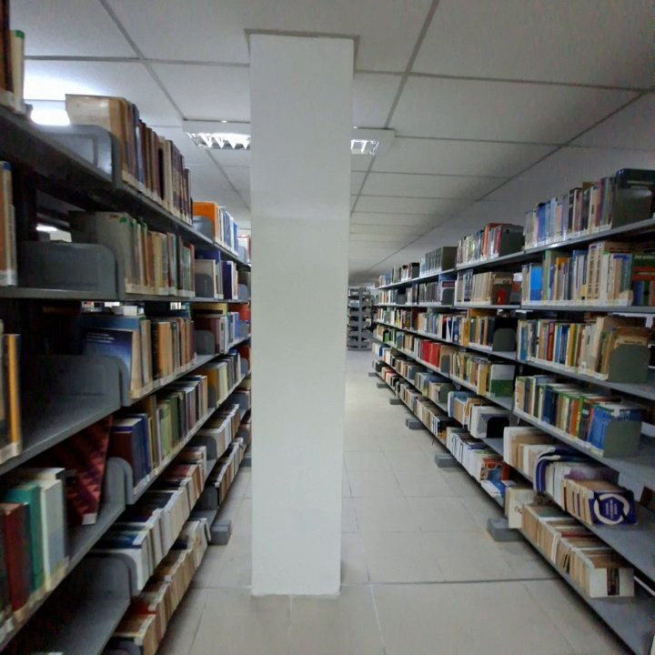
A navegação em ambientes internos para pessoas com deficiência visual exige sistemas robustos, acessíveis e capazes de funcionar em lugares diferentes daqueles usados no seu desenvolvimento.
Trabalhos anteriores já usaram imagens egocêntricas e sensores inerciais para prever ações de navegação. Mas bases derivadas de vídeo têm muita redundância temporal — frames vizinhos são quase idênticos — e podem sofrer vazamento de dados, o que leva a avaliações otimistas demais.
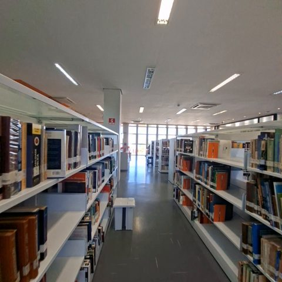
Treinoframe 0000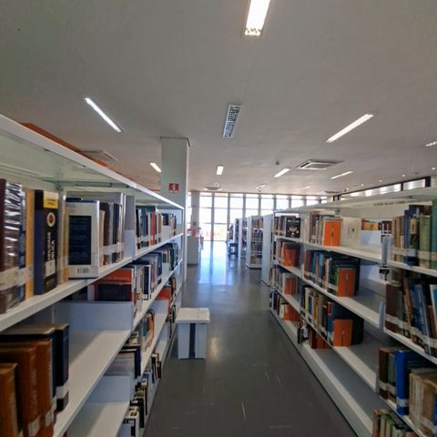
Testeframe 0001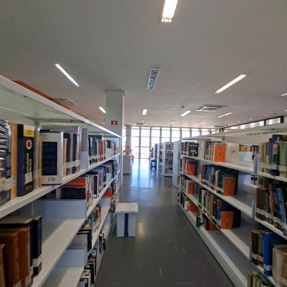
Treinoframe 0002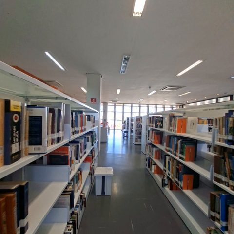
Testeframe 0004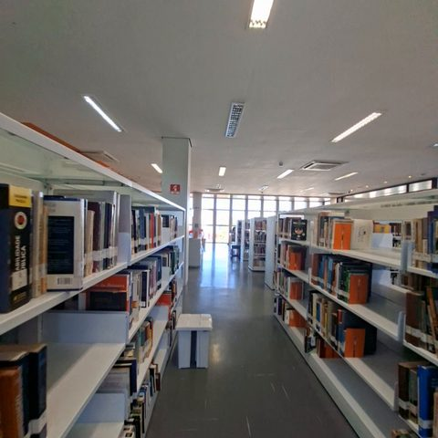
Treinoframe 0005As imagens são captadas do ponto de vista de quem caminha, com o celular junto ao corpo — como se a câmera “visse” o caminho junto com a pessoa.
Além do vídeo, o celular registra o movimento: acelerômetro e giroscópio indicam quando a pessoa começa e termina uma manobra.
Um modelo é testado em um local que não apareceu no treino. Isso mostra se ele aprendeu a tarefa ou apenas memorizou o lugar.
Gravações curtas organizadas por evento: cada uma registra uma pessoa caminhando em um ambiente interno, com o caminho livre ou realizando um desvio ou uma parada diante de um obstáculo.
Os quatro cenários gravados em cada ambiente, segundo o protocolo de coleta.
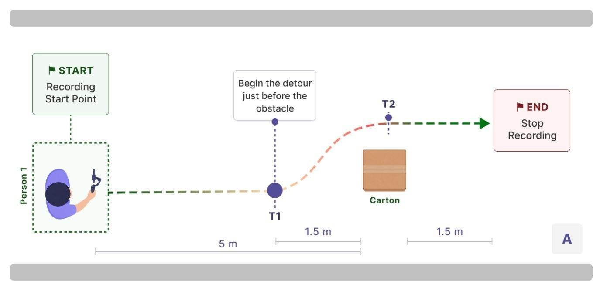
A pessoa contorna um obstáculo no corredor — no protocolo, uma caixa de papelão.

O obstáculo é outra pessoa parada no caminho, contornada pelo outro lado.
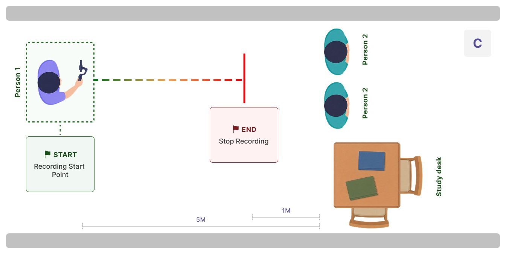
A pessoa caminha em direção a um obstáculo e para antes de alcançá-lo.
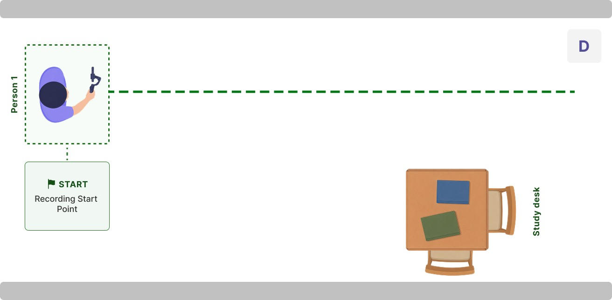
Não há obstáculo no trajeto: a pessoa segue em linha reta até o fim da gravação.
A base existe em duas versões: o dataset bruto, com todas as coletas, e o dataset revisado (congelado), usado nos experimentos.
Todas as coletas realizadas
Versão congelada
Os sinais dos sensores delimitam cada manobra; os frames que antecedem a ação recebem dois rótulos.
As imagens da base SenseCV estão disponíveis em uma pasta pública no Google Drive.
O SenseCV para Android grava vídeo da câmera do celular e, ao mesmo tempo, os dados dos sensores internos, salvando tudo organizado por gravação. É uma ferramenta de coleta para pesquisa — não um aplicativo de navegação para o usuário final.
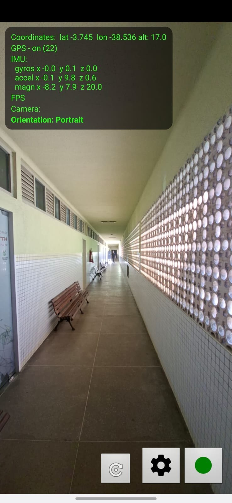
Tela de gravação do SenseCV, com a pré-visualização da câmera e as leituras dos sensores.
metadata.json registra aparelho, lente, FPS, resolução, orientação e responsável pela coleta.As gravações ficam na pasta SenseCV/ do aparelho, uma subpasta por evento:
SenseCV/ └── 01/ ├── video.mp4 # vídeo da câmera ├── frames.json # registro dos frames ├── accelerations.json # acelerômetro ├── rotations.json # giroscópio ├── magnetometer.json # magnetômetro ├── locations.json # localização ├── gps_status.json # estado do GPS └── metadata.json # configuração da captura
O aplicativo é escrito para Android e é baseado no projeto de código aberto PilotGuru Recorder, adaptado para a coleta do SenseCV. A versão atual é a v0.2.5, e o uso previsto é acadêmico e de pesquisa.
O repositório descreve um procedimento recomendado para cada sessão: informar o nome de quem coleta, escolher FPS, lente e resolução, conferir a orientação, gravar e confirmar o número sugerido para a gravação.
Da gravação ao teste em um local inédito, cada etapa foi pensada para que a avaliação reflita a dificuldade real da tarefa.
Gravações com o app SenseCV seguindo o protocolo: início em um ponto marcado, caminhada com o caminho livre ou aproximação do obstáculo com desvio ou parada, e fim da gravação.
Cada gravação é um evento com seu vídeo, dados de sensores e metadados, agrupados por coleta e por ambiente.
Acelerômetro e giroscópio estimam o início (T1) e o fim (T2) de cada manobra.
Apenas os frames anteriores ao início da ação são usados pelo modelo, cada um com condição do caminho e direção de desvio.
A separação é feita por ambiente: o local de teste não aparece no treinamento.
39th Conference on Graphics, Patterns and Images (SIBGRAPI 2026) · trilha Work in Progress
Apresenta o SenseCV e avalia duas hipóteses: que reduzir a taxa de amostragem diminui a redundância sem perder acurácia, e que a separação por local gera estimativas de generalização mais realistas do que divisões aleatórias.
Pesquisadores do Instituto Federal do Ceará (IFCE).
Mestrando em Ciência da Computação
IFCE
Graduando em Engenharia da Computação
IFCE
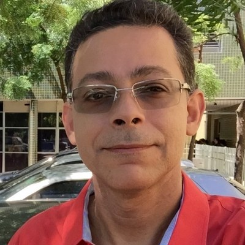
Orientador
IFCE
Pasta pública com as imagens da base SenseCV.
Google DriveCódigo-fonte do app Android de coleta sincronizada de vídeo e sensores.
github.com/SenseCV/AppOrganização do projeto no GitHub.
github.com/SenseCVDúvidas, colaborações ou interesse no projeto? Escreva para a equipe.
sensecvifce@gmail.com